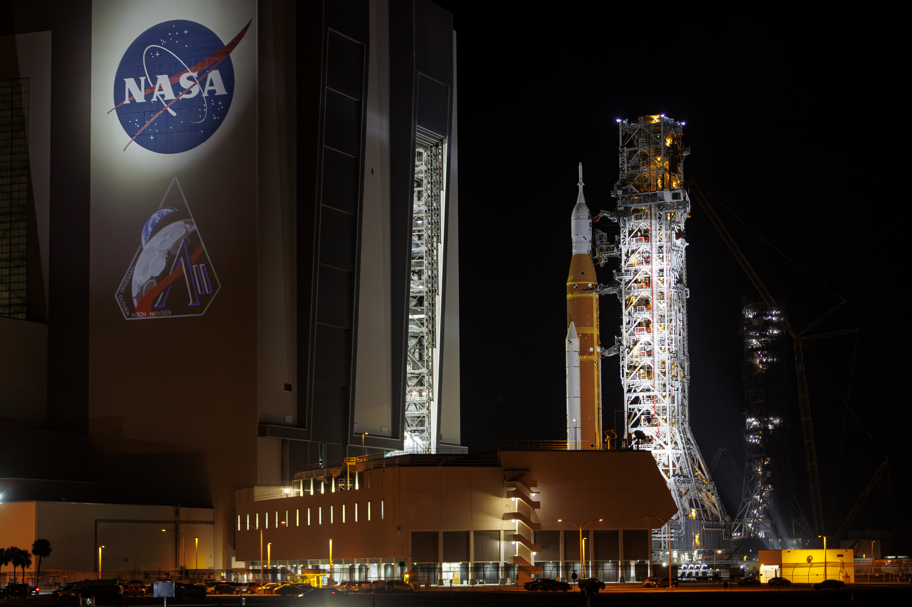

A crescent Moon, a crescent Earth, and the blackness of space, as seen by the Artemis II astronauts. Credit: NASA
STEPHEN CLARK – APR 8, 2026 11:44 PM
The data pipeline from NASA’s Artemis II mission opened to full blast a few hours after looping behind the far side of the Moon on Monday night, when the Orion spacecraft established a laser communications link with a receiving station back on Earth.
A cache of high-resolution images began streaming down through this connection. NASA released the first batch to the public on Tuesday. Most of the images were taken by the four Artemis II astronauts using handheld Nikon cameras fitted with wide-angle and telephoto lenses. They also had iPhones to capture views out of the windows of their Orion Moon ship, named Integrity.
After reaching their farthest point from Earth, astronauts Reid Wiseman, Victor Glover, Christina Koch, and Jeremy Hansen are accelerating back to Earth for reentry and splashdown Friday evening to wrap up the first crewed lunar mission in more than 53 years.
“I think the biggest value here is the PR. I mean, it’s getting the public excited.”

“Right away, they started describing the green around Aristarchus plateau and different brown hues, and these colors really help tell us nuances about the chemistry of lunar material”
Throughout their encounter with the Moon, the astronauts radioed down their impressions of what they were seeing. Their callouts vacillated from descriptions riddled with scientific jargon to exclamations of awe and joy. Geologists inside NASA’s Mission Control Center in Houston were giddy with excitement. This was the first time humans have explored another planetary body in nearly 54 years. Thanks to a fortunate bit of celestial mechanics, the Artemis II astronauts saw portions of the far side of the Moon that previously were observed only by robotic missions.
But those robotic spacecraft are loaded with sophisticated scientific instruments viewing the Moon in light waves across the electromagnetic spectrum. They have laser altimeters, radars, and magnetometers, and dust and plasma sensors to interrogate the Moon and its surroundings. And unlike Artemis II, robotic orbiters have surveyed the Moon for decades. Their discoveries include detecting signs of water ice inside craters at the Moon’s south pole, one of the most compelling reasons to send humans back to the surface.